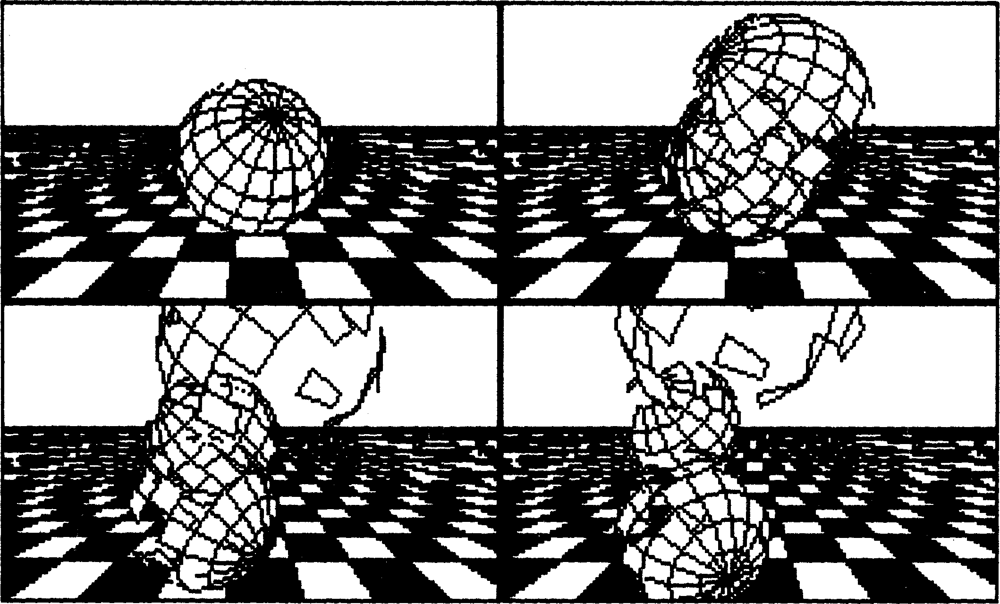
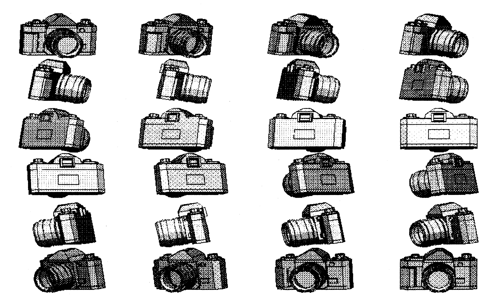

Elefantenhochzeit
Im Normalfall ist es unmöglich, mit Giga-CAD erstellte Filme nachzubearbeiten. Hier erhalten Sie ein Programm, das das verwirrende Format von Giga-CAD-Filmbildern in das von Hi-Eddi konvertiert und die bearbeiteten Grafiken wieder zurückverwandelt.
Das Programm »Film-Converter« schlägt eine Brücke zwischen den beiden Spitzenprogrammen Giga-CAD und Hi-Eddi sowie deren Plus-Versionen. Diese Brücke ermöglicht es Ihnen, schattierte Giga-CAD-Filme mit Hi-Eddi nachzubearbeiten oder zu ergänzen, was Ihre Kreativität geradezu herausfordert.
Wenn Sie schon auf etwas Erfahrung als Giga-CAD-Filmregisseur zurückblicken können, werden Sie dies vielleicht bemerkt haben: Bei der Schattierung in besonders komplexen und extremen Situationen können Fehler auftreten. Diese Fehler vermehren sich, je feiner und detaillierter die Objekte und Körper konstuiert sind. Das Fatale dabei ist, daß man diesen Makel nicht etwa durch eine Überarbeitung des Programms beseitigen kann. Das Problem läßt sich schlicht auf die Rechen(un)genauigkeit des C 64 zurückführen.
Bei schattierten Grafiken in ein-, vier- oder zehnfacher Auflösung kann man die Fehler problemlos mit Hi-Eddi vertuschen, da sich die einzelnen Grafiken leicht laden lassen. Leicht deshalb, da die einzelnen Teil- oder Vollbilder als gewöhnliche 8-KByte-Hires-Grafiken auch mit Hi-Eddi und Hi-Eddi+ bearbeitet werden können. Fehler in Filmen sind jedoch mit dieser Methode nicht zu beseitigen.
Um auch hier mogeln zu können, benötigen Sie den Film-Converter. Eine Nachbearbeitung von Filmen ist insbesondere auch dann attraktiv, wenn man die Filme künstlerisch zur Vollendung führen möchte. Es lassen sich schließlich auch Teile aus anderen Filmen in den Giga-CAD-Film einmontieren. Der Film läßt sich auch frei Hand bereichern. Dabei sind die Möglichkeiten schier grenzenlos. Das Spektrum reicht von Schatten und Hintergrundgrafiken bis zu Laufschriften und Strichmännchen.
Wenn Sie ein Giga-CAD-Filmbild ohne besondere Vorkehrungen in einen Bildschirmspeicher von Hi-Eddi laden, werden Sie lediglich seltsame Linienfetzen und Bildfragmente zu Gesicht bekommen. Fast so, als ob Ihr Bild von einem Reißwolf mißhandelt worden wäre. Doch dieser Ärger mit Hi-Eddi ist nur darauf zurückzuführen, daß der Autor von Hi-Eddi die Bilder als gewöhnliche Hires-Bitmap speichert. Denn bei Hi-Eddi gibt es einen Programmteil zum Betrachten von Filmen, die jedoch hier immer zu je vier Filmbildern bildschirmfüllend organisiert sind.
Mit dem Film-Converter lassen sich vier einzelne Giga-CAD-Filmbilder in ein komplettes 8-KByte-Hires-Bild umwandeln. Was Sie dabei zu tun haben, wird im folgenden beschrieben:
Tippen Sie zuerst Listing 1 mit dem Checksummer und dann Listing 2 mit dem MSE ab und speichern beide Programme auf eine Diskette. Zum Konvertieren müssen Sie dann nur das Basic-Programm laden und mit RUN starten. Das Maschinenprogramm (Listing 2) wird automatisch nachgeladen.
Ein Menü bietet dem Anwender eine Übersicht aller möglichen Funktionen. Auf diese Punkte wird nun eingegangen:
A — Giga-CAD → Hi-Eddi
Mit diesem Programmpunkt läßt sich die angesprochene Konvertierung vornehmen. Der Computer fragt Sie nach dem Namen eines Filmbildes. Geben Sie hier den Dateinamen (ohne »FI.«) und, durch ein Leerzeichen getrennt, die Nummer des Bildes ein. Wenn in das linke obere Viertel des Bildschirms kein Filmbild konvertiert werden soll, geben Sie »-« anstelle des Filenamens ein. Drücken Sie anschließend <RETURN>.
Der Name für das Filmbild, das oben rechts erscheinen soll, ist nun einzugeben. Auch hier ist wieder ein »-« möglich. Wenn Sie das Filmbild umwandeln wollen, das im Normalfilm auf das zuvor eingegebene folgen würde, muß nur <RETURN> gedrückt werden. Ebenso ist bei der Eingabe der folgenden beiden Bilder zu verfahren.
Sind die Namen aller vier Bilder eingegeben, fordert das Programm den Anwender auf, die Diskette mit den Filmen einzulegen. Nach einem Tastendruck schaltet sich der Hires-Bildschirm ein und Sie können beobachten, wie die einzelnen Filmbilder konvertiert werden (Bild 1). Anschließend ist der Filename des eben erzeugten Grafikbildes einzugeben. Diese 8-KByte-Grafik läßt sich dann auf jede formatierte Diskette speichern.

B — Hi-Eddi → Giga-CAD
Ebenso, wie man vier Giga-CAD-Filmbilder zu einer Gesamtgrafik verschmelzen kann, ist es möglich, ein Hires-Bild in vier einzelne Filmbilder zu zerlegen. Es ist nur logisch, daß Sie in diesem Fall zuerst den Filenamen der Gesamtgrafik eingeben müssen. Konsequenterweise wird anschließend nach dem Namen für die einzelnen Filmbilder gefragt. Ein rekonvertierter Film kann dann problemlos mit der Giga-CAD-Filmroutine betrachtet werden, gesetzt den Fall, der Film ist vollständig.
C — Diskettenkommando senden
Mit diesem Menüpunkt lassen sich Diskettenkommandos eingeben, die dann unverändert der Diskettenstation übermittelt werden. Mit
S:FI.TEST 1läßt sich beispielsweise ein einzelnes Filmbild löschen.
D — Directory anzeigen
Drücken Sie die Taste <D>, so wird das Directory der eingelegten Diskette auf dem Bildschirm ausgegeben.
E — Grafik ansehen
Wollen Sie die zuletzt konvertierte Grafik nochmals betrachten, genügt ein Druck auf die Taste <E>. Zur Rückkehr in das Hauptmenü genügt ein Tastendruck.
Wie Sie es bereits von Giga-CAD gewohnt sind, können Sie jede Funktion mit der Taste <←> oder durch Eingabe eines Leerstrings abbrechen. Selbstverständlich arbeitet der Film-Converter tadellos mit Giga-CAD Plus zusammen. Dort sind schließlich die gestalterischen Möglichkeiten bei Filmen wesentlich größer, so daß sich das Programm noch universeller einsetzen läßt.
Abschließend verraten wir Ihnen noch einen kleinen Trick, mit dem Sie Ihre Filme sogar in Giga-CAD-Qualität auf Papier bannen können: Sie müssen nur das »PI.« vor dem Namen durch ein »HZ.« ersetzen, was am besten mit »Diskettenkommando senden« geht. Die sechs Grafiken müssen ferner den gleichen Namen tragen und von »1« bis »6« durchnumeriert werden, durch ein Leerzeichen vom restlichen Dateinamen getrennt. Laden Sie die Giga-CAD-Hardcopyroutine und drucken die sechs Grafiken, nahtlos aneinandergereiht, mit dem Menüpunkt »10fach-Hardcopy« aus (Bild 2). Daß der Computer einen Diskettenfehler meldet, sobald er auf der Diskette nach der siebten Grafik sucht, braucht Sie dabei nicht zu stören. Sie können übrigens den Ausdruck zerschneiden und ein Daumenkino daraus fertigen. So können Sie auch anderen Ihre Kunstwerke vorführen, ohne ständig einen Computer bei sich haben zu müssen.
(Stefan Vilsmeier/dm)